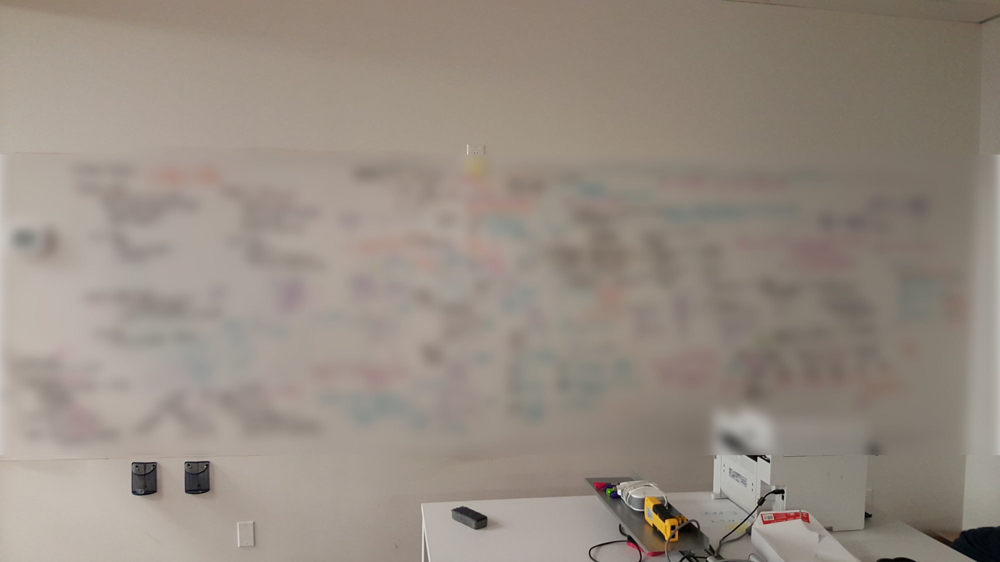

This case study could have been the usual evolution of wireframes/screens but instead it is about the most salient aspect of this project - that is, its technical nature. This was a departure from my previous work in several ways:
-
Highly complex subject matter
I was the only non-technical member of the team (even the business stakeholders were previously in technical roles)
The mental model and the implementation model were almost identical
The Problem
The Current Way is No Longer the Best Way
Keeping your app/data on-premises (on-prem) is
-
Costly (purchasing, maintaining, housing equipment, etc.)
Inflexible (you will have excess capacity in off-peak times)
Stressful (with many teams having to work weekends with frequent outages)
Taking up valuable resources that could be used on the application side to generate more revenue
Slow moving and siloed
Change is Scary
The journey to the uncharted territory of the cloud is not always smooth due to:
-
Knowledge gaps in the organization
High risk – could result is lost revenue, lost data, downtime, angry customers, and if you champion this and it all goes wrong, it's your job/reputation at stake
Asking companies to give up control of their data
Costs
May be hard for change agents to get buy in from others in the organization who feel their job may be threatened
Solution
A cloud orchestration platform that would allow organizations to adopt a hybrid model, which would allow them to use a mix of on-prem and cloud, thereby minimising the risk and allowing them to test and transition. It would even allow them to mix and match cloud providers to maximise cost savings.
The platform also has a solution for connectivity, which allows the organization to do the migration and from then on, connect to their cloud resources securely and with minimal performance issues. This would ordinarily be another product, another variable, another company to chase up when things go wrong, but in our platform it is integrated and seamless.
On the business side, there is also visibility on spending and controls to prevent overage for peace of mind.
Challenges
-
When I arrived at the company, they were already in the solution space. There was a whole whiteboard-wall (pictured, blurred for confidentiality) that was filled with very detailed technical specifications but were not easily understood by outsiders
Changing requirements
Steep learning curve
Difficult to recruit research participants
The organization plays the role of all user groups (both the provider and consumer sides), adding an extra challenge when parsing their responses to questions
The Dogma of Human Centred Design
HCD was a significant change to the way they worked/thought. The team already understood their domain (they are literally - at least in the short term - going to be users); The tasks are somewhat standardised; The mental model isn't that different to the implementation model. For the first time in my career, I thought critically about the dogma of HCD. Were there actually some instances where HCD was not the best solution and was this one of them? Am I just doing this for me? (In the end, I eventually overcame these doubts as I continued my work).
Strategies
Ideally, I would have wanted to validate assumptions with primary research before building the solution, but I decided to adopt an incremental approach. My plan was to work within their workflow to begin with, in order to build trust before I proposed any drastic changes. In this case, I had access to internal subject matter experts (SMEs) and a wealth of secondary research online, which would still give me a decent result (and a better return on my time investment) so I decided to save my political capital.
Learn
I needed to get up to speed, so I did as much research as I was able to do with the resources I had.
-
Desk research – reading a lot about the subject matter to get up to speed. Again, because it is a product people use for work, there is a wealth of secondary research available online (tutorials, blogs about people's experiences, technical documentation, etc.)
Using internal SMEs - Usually I would worry that this would introduce some bias in the results but in this particular case, the risk wasn't as big. The tasks and best practices are somewhat standard, and even if the way our organization does things is different to the industry at large, we had the option to use the tool for ourselves (which is what other MSPs such as Dimension Data and VMFarms already do) with the possibility of iterating pending broader research.
Guerilla Research/Intercept Studies - Going to events (e.g. Tech TO) to people working in the roles we are targeting, as well as using people I knew/serendipitously met
Competitor analysis – seeing how they communicate their value proposition and where we are in relation
Communicate
My first attempt at a workshop to elicit existing internal knowledge about users was difficult. The questions I was asking were very high level and centred around the human element, rather than the actual nuts and bolts of the tasks. While I thought this was very important, they perceived it to be extraneous. In light of this, I changed my communication style to meet them where they were.
-
Using the HCD artefacts for design but communicating them in a way that fit with their mental model (e.g. task flows and diagrams), particularly early on
Asking why and reframing explanations
Taking the granular detail from the wall and taking it high level
Co-Create
Being co-located with the infrastructure team allowed me to continually observe/learn about the domain (without the Observer Effect) and gave me a drip-feed of intelligence that I could use throughout the design procecss, rather than just at the beginning. It also gave me the ability to form a tight feedback loop where I could verify my designs quickly.
Outcome - The Vindication of HCD
As it turned out, while the mental and implementation models are very close, they weren't as close as it first appeared and we did benefit from human centred design. All it took was to frame it a little differently.
-
It gave focus to the omni-channel experience and the contexts of use, rather than just how to spin a virtual machine.
People began having scenario based conversations from the user’s perspective instead of being centred around the product
Having an awareness of the larger journey helped to curb scope creep and saved resources that would have been spent going down the wrong path (e.g. not having the product also turn into a CRM and/or an invoicing tool)
It also made it easier to articulate the value proposition when it came time for marketing